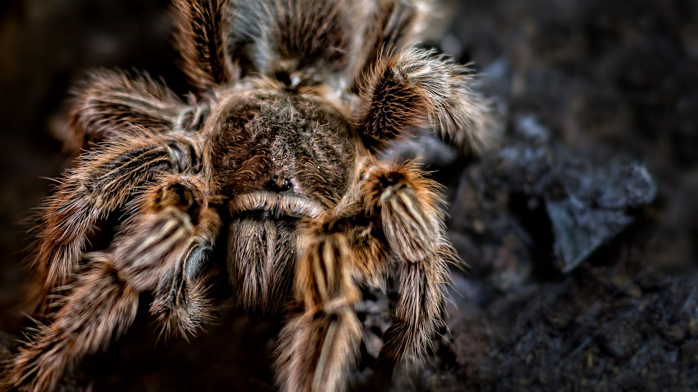

Пауки́-птицее́ды, или пауки-птицея́ды (лат. Theraphosidae) — семейство пауков из инфраотряда
мигаломорфных (Mygalomorphae).
Взрослые особи характеризуются крупными размерами, в некоторых случаях превышая 27 см в размахе ног.
Широко распространено
содержание птицеедов в качестве экзотических домашних животных.
Птицееды населяют все континенты, кроме Антарктиды. Ареал включает полностью Африку, Южную
Америку,
Австралию и Океанию.
В Европе пауки-птицееды встречаются редко, их ареал включает южную половину Италии, Испанию и
Португалию. Встречаются как влаголюбивые виды, обитающие в кронах экваториальных лесов.
Птицееды являются облигатными (строгими) хищниками. Вопреки названию, их пищеварительная система
не рассчитана на постоянное питание мясом (птицей). Основу рациона пауков-птицеедов составляют
насекомые или более мелкие пауки. Пауки в достаточной степени всеядны и могут съесть разнообразный
корм: мух, тараканов, мотылей, лягушат, мелких грызунов, птиц, рыб и многое
другое. Птицееды подкарауливают добычу из засады.

Здесь будут ссылки на статьи
Интерактивная карта мест обитания Пауков-птицеедов